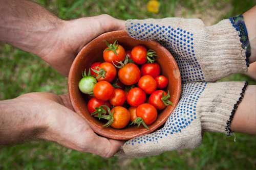

Weather Forecast
Summer Crop Co-Op

Farmers markets are among Idaho’s most popular outdoor events and
traditions. And like so many other businesses and public gatherings,
farmers markets have had to adapt to pandemic health restrictions. But
here’s some good news - many of these markets are starting to reopen
for the season.
Garden master Jim Duthie talks with the director of one of
the local markets that’s opening this weekend, to find out what you
can expect, and how you can support these local small businesses
safely, and still get the quality products and fresh produce that you
love.
Every weekend from spring to fall, in many communities across
southwest Idaho, you can find farmers markets set up in parks and
parking lots. But with the onset of the pandemic last year, these
small businesses had to adapt and adjust to some big changes in how
they interact with the public. And now, as a new season begins, local
farmers markets are once more ready to welcome customers safely and
efficiently.
Idaho farmers markets offer a wide range of products, including baked
goods, arts and crafts, plants and flowers, locally-made food products
like jerky, beverages, and condiments; and, of course, fresh locally
grown produce.